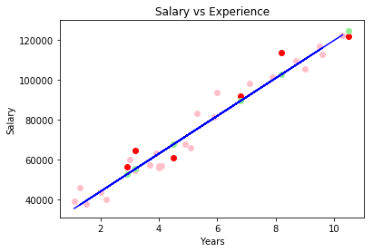
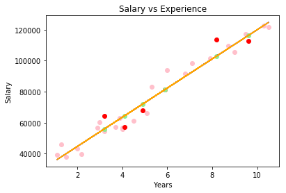
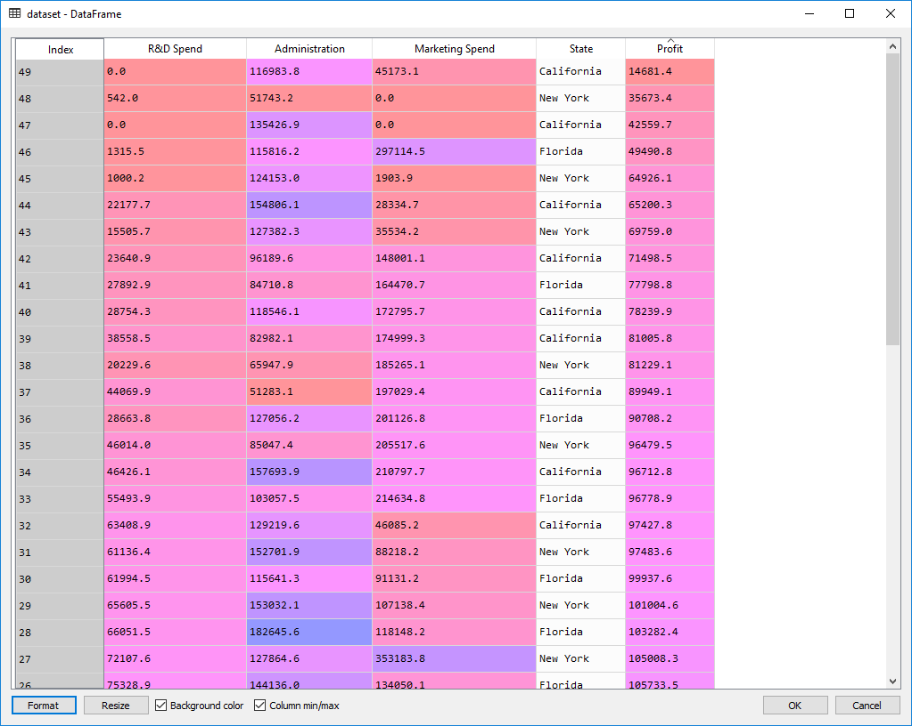
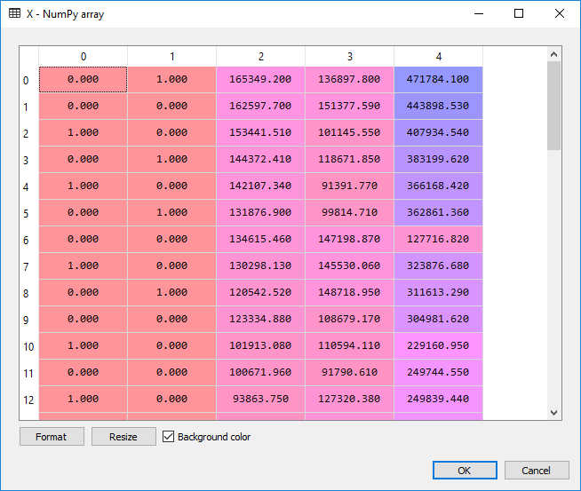
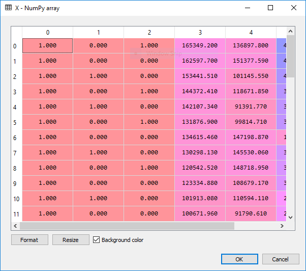
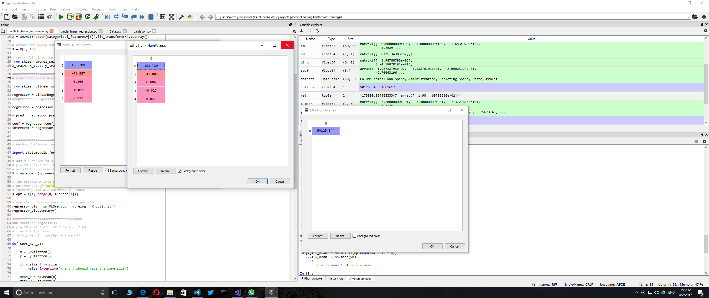
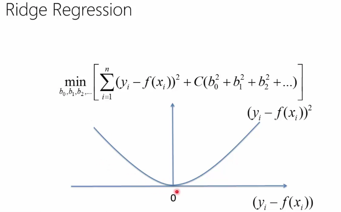
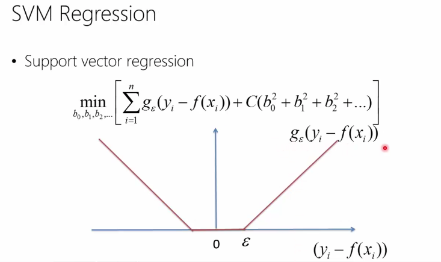

Simple and Multiple Linear Regression
This is the second part of my Machine Learning notebook. It talks about simple and multiple linear regression, as well as polynomial regression as a special case of multiple linear regression. It provides several methods for doing regression, both with library functions as well as implementing the algorithms from scratch.
Simple Linear Regression With Plot
Let's draw a plot with the following convesion:
- Pink dots - training set X
- Blue line - regression line on the train set
- Red dots - values to predict (test set)
- Green dots - predicted values for the test set (situated on the blue line)
We consider sets of ys and xs, derived from experiments. Assuming that y = ax + b, what value for a and b minimize the error of sum ((yi-(axi + b))^2)? b is called intercept and a is the slope.
import pandas as pd
dataset = pd.read_csv(".\\Data\\Salary_Data.csv")
X = dataset.iloc[:, :-1].values
y = dataset.iloc[:, 1].values
from sklearn.model_selection import train_test_split
X_train, X_test, y_train, y_test = train_test_split(X, y, test_size = 0.2)
from sklearn.linear_model import LinearRegression
regressor = LinearRegression().fit(X_train, y_train)
y_pred = regressor.predict(X_test)
import matplotlib.pyplot as plt
# scatter plot
plt.scatter(X_train, y_train, color="pink")
plt.scatter(X_test, y_test, color="red")
plt.scatter(X_test, y_pred, color="lightgreen")
# line plot
plt.plot(X_train, regressor.predict(X_train), color="blue")
plt.title("Salary vs Experience")
plt.xlabel("Years")
plt.ylabel("Salary")
plt.show()

The implementation of a simple linear regressor using the ordinary least squares method is straight forward:
import numpy as np
def ols_train_predict(_X_train, _Y_train, _X_test):
"""
f = sum( (Y - (aX+b)) ** 2) == minimum <=>
df / da = 0 and df / db = 0
"""
# secure the same dimensions
X_train = _X_train.flatten()
Y_train = _Y_train.flatten()
X_test = _X_test.flatten()
xi_2_sum = np.sum(X_train * X_train)
xi_sum = np.sum(X_train)
xi_yi_sum = np.sum(X_train * Y_train)
N = X_train.size
yi_sum = np.sum(Y_train)
# we now have to solve the following equations:
# a * xi_2_sum + b * xi_sum - xi_yi_sum = 0
# a * xi_sum + b * N - yi_sum = 0
a = (xi_yi_sum * N - xi_sum * yi_sum) / (N * xi_2_sum - xi_sum * xi_sum)
b = (yi_sum - a * xi_sum) / N
return X_test * a + b
Y = ols_train_predict(X_train, y_train, X_train)
# line plot
plt.plot(X_train, Y, color="orange")
The basic idea for all least squares methods is that the function S=sum((yi-f(xi, B))^2) should be minimized, where B is a vector of variables we need to identify. In the particular case of linear regression, B = [a, b] and f(xi, B) = axi + b. Minimized means the conditions dS / dB[i] = 0. In the case above, we have a system of two equations with two unknowns, d(sum ((yi-(axi + b))^2))/da = 0 and d(sum ((yi-(axi + b))^2))/db = 0.
Results:

Note:
I kept the function above simple, but it is not numerically friendly. Numbers xi_2_sum, xi_yi_sum, etc. might get very high. Therefore some rearangement of the computation should be performed for production code.
Linear Regression And Correlation
Another method for obtaining similar results is to use the corellation coefficient for determining a and b. a = R * stddev(y) / stddev(x), b = mean(y) - a * mean(x) where R = dot(z_score(x), z_score(y)) / sizeof(x) and z_score(x) = (x - mean(x)) / stddev(x). This is clearly simpler to read and also provides more context to the results of the method - corellation coefficient (R) is between -1 and 1, with 0 meaning there is no corellation. This correlation coefficient is also known as the Pearson coefficient
Here is the python code:
# 50 points, x between 10, 100, a = 2, b = 126, variation of y = 20
y = m.generate_noisy_linear_data(10, 100, 50, 2, 126, 20)
x = np.linspace(10, 100, 50)
plt.scatter(x, y)
plt.show()
# z-score
x_ = m.scale_std_dev(x)
y_ = m.scale_std_dev(y)
plt.scatter(x, y)
plt.show()
correlation = (1 / x_.size) * np.dot(x_ , y_)
print(correlation)
a = correlation * np.std(y) / np.std(x)
b = np.mean(y) - a * np.mean(x)
print(a, b)
Giving very close results for corellation=0.994670853834, a = 2.01623520593 and b = 125.614041068.
Multiple linear regression
Formula: y = b + a1 * x1 + a2 * x2 + a3 * x3 + ...
Assumptions that need to be checked first:
- Linearity
- Homoscedasticity (all random variables in the sequence or vector have the same finite variance)
- Multivariate normality of error distribution - https://en.wikipedia.org/wiki/Multivariate_normal_distribution
- Independence of errors
- Lack of multicolinearity - is a phenomenon in which two or more predictor variables in a multiple regression model are highly correlated, meaning that one can be linearly predicted from the others with a substantial degree of accuracy
For categorial variables, we need to transform them in dummy binary variables, but not include all of them in the regression model - dummy variable trap. The idea is that if we include all the categories in the multiple regression we break the rule of lack of multicolinearity. Afterall, if a value does not belong to a category, it will belong to another. The rule is "always omit one dummy variable".
Methods for building a multiple regression model:
-
All variables in - not really recommended because of the noise some variables might bring to the prediction. Some variables might simply be bad predictors and they would only pollute the model space. Useful if you have prior knowledge of the problem domain and you know that these variables matter.
-
Backward elimination - Steps:
- Select a significance level to stay in the model (SL = 0.05, for instance),
- Fit the model with all possible predictors (all variables in),
- Consider the predictor with the highest P-value.
- If P > SL, go to next step. Otherwise finish. Step 5. Fit the model without this predictor and go to Step 3.
In the end we have a model in which all variables have their P-value less than our chosen significance level.
- Forward selection - Steps:
- Select a significance level to enter the model. E.g. SL = 0.05.
- Fit all simple regression models y ~ xi. Select the one with the lowest P-value
- Construct all possible models with this variable AND with another predictor added to this one.
- Select the predictor with the lowest P-value. If P-value < SL, go to 3. Else finish and keep the previous model.
- Bidirectional elimination (stepwise regression) - Steps:
- Select a significance level to enter and a significance level to say.
- Perform next step from forward selection.
- Perform all steps from backward elimiation.
The model is considered finished when no more variables can enter or stay.
- Score comparison
- Build several models
- Select the one that fits best a specific criterion
TODO in a future post: how to numerically compute the P-value
Multiple linear regression - the code
The dataset:

Preparing the data:
import numpy as np
import pandas as pd
import matplotlib.pyplot as plt
# load data
dataset = pd.read_csv(".\\Data\\50_Startups.csv")
X = dataset.iloc[:, :-1].values
y = dataset.iloc[:, 4].values
# encode categorical data to numbers
from sklearn.preprocessing import LabelEncoder
# transforms categorical data from strings to numbers (our State column)
X[:, 3] = LabelEncoder().fit_transform(X[:, 3])
# since we don't want in our model to have order between categories,
# we need to create dummy variables, one column per each category
from sklearn.preprocessing import OneHotEncoder
X = OneHotEncoder(categorical_features=[3]).fit_transform(X).toarray()
# Remove the dummy variable trap - we remove the first colum, which is equivalent to "California"
X = X[:, 1:]
# split data into training and test
from sklearn.model_selection import train_test_split
X_train, X_test, y_train, y_test = train_test_split(X, y, test_size=0.2, random_state=0)
And the output:

For the actual regression:
from sklearn.linear_model import LinearRegression
regressor = LinearRegression()
regressor = regressor.fit(X_train, y_train)
y_pred = regressor.predict(X_test)
*** Backward Elimination ***
import statsmodels.formula.api as sm
# add a 1 column to X. our formula for linear regression is
# y = b0 + b1 * x1 + b2 * x2 ... <=> y = b0 * x0 + b1 * x1 + ... where x0 == [1, ..]
# we add the column in the beginning so it is easier to interpret the result
X = np.append(np.ones((50,1)), X, axis = 1)

To remember: the lower the P-value, the more statistically relevant the independent variable is going to be in our regression model.
# the optimum matrix of features that contains the
# optimum set of variables to predict the outcome - setatistically significant
# initially add all columns, all rows
X_opt = X[:, range(0, X.shape[1])]
# use the ordinary least squares algorithm
regressor_ols = sm.OLS(endog = y, exog = X_opt).fit()
regressor_ols.summary()
We get the following table, with the P-values in the P>t column. const, x1, ... x5 are the coefficients b0, b1, .. b5 specified above.
| | coef| std err| t| P>t| [95.0% Conf. Int.]|
|----------------------------------------------------------------------------------|
|const | 5.013e+04| 6884.820| 7.281| 0.000| 3.62e+04 6.4e+04|
|x1 | 198.7888| 3371.007| 0.059| 0.953| -6595.030 6992.607|
|x2 | -41.8870| 3256.039| -0.013| 0.990| -6604.003 6520.229|
|x3 | 0.8060| 0.046| 17.369| 0.000| 0.712 0.900|
|x4 | -0.0270| 0.052| -0.517| 0.608| -0.132 0.078|
|x5 | 0.0270| 0.017| 1.574| 0.123| -0.008 0.062|
According to algorithm, we remove x2 and redo the ordinary least square fit.
In the end, if we continue to run the backwards elimination algorithm, we notice that the only variable that significantly influences the profit is the R&D Spent. :)
Multiple Linear Regression From Scratch
We consider the line Y = b0 + b1 * x1 + b2 * x2 + ....
Theorem: The regression line has the following form: Y - y_mean = sum(bj * (xj - xj_mean)), where bj solve the following system of equations: cov(y, xj) = sum(bm * cov(xm, xj)) here
We are going to do precisely this. The covariation between two vectors is expressed through the following function:
####################################
### multiple regression
# y = b0 + x1 * b1 + x2 * b2 + x3 * b3 ...
# line has the form
# (y - y_mean) = sum(b(x - x_mean))
def cov(_x, _y):
x = _x.flatten()
y = _y.flatten()
if x.size != y.size:
raise Exception("x and y should have the same size")
mean_x = np.mean(x)
mean_y = np.mean(y)
N = x.size
return (1 / N) * np.sum((x - mean_x) * (y - mean_y))
However, we are not going to use it, but rather use directly numpy's matrices for faster computation.
def cov_matrix(_y, _x):
if _x.shape[0] != _y.shape[0]:
raise Exception("Shapes do not match")
# make sure we use matrix multiplication, not array multiplication
_xm = np.matrix(np.mean(_x, axis=0).repeat(_x.shape[0], axis = 0).reshape(_x.shape))
_ym = np.matrix(np.mean(_y, axis=0).repeat(_y.shape[0], axis = 0).reshape(_y.shape))
return ((_x - _xm).T * (_y - _ym)) * 1 / _x.shape[0]
def compute_b0_bn(ym, Xm):
if ym.shape[1] != 1:
raise Exception ("ym should be a vector with shape [n, 1]")
if Xm.shape[0] != ym.shape[0]:
raise Exception ("Xm should have the same amount of lines as ym")
C_y_x = cov_matrix(ym, Xm)
C_x_x = cov_matrix(Xm, Xm)
b1_bn = C_x_x.I * C_y_x
x_mean = np.matrix(np.mean(Xm, axis = 0))
y_mean = np.mean(ym)
b0 = -x_mean * b1_bn + y_mean
return (np.float(b0), np.array(b1_bn).flatten())
Xm = np.matrix(X)
ym = np.matrix(y.reshape((y.shape[0], 1)))
ret = compute_b0_bn(ym, Xm)
In order to test my function, I have compared its results with the results of algorithm from the library. They are identical.
from sklearn.linear_model import LinearRegression
regressor = LinearRegression()
regressor = regressor.fit(X, y)
coef = regressor.coef_
intercept = regressor.intercept_

Polynomial regression
Given the two ecuations, one for multiple linear regression ( y= b0 + b1*x1 + b2*x2 + ...) and the other one for polynomial regression (y = b0 + b1*x + b2*x^2 +...), we can obviously substitute xi for x^i in the first ecuation and apply the multiple linear regression algorithm to compute the polynom.
Linearization models
In case of non-linear functions (power law, exponential decay), the standard way to do the regression is to apply a logarithm and then compute the coefficients according to the newly obtained linear model. E.g. y = a*x^b -> log(y) = log(a) + b * log(x), a linear ecuation. However, computing the regression coefficients this way is prone to large errors due to the fundamentally non-linear underlying relationship. A solution which yields much better results is to consider the function as it originally is and then find its regression coefficients using an optimization method like, for instance, a nature inspired optimization - see post about nature inspired optimizations.
Ridge regression
To keep the model simple (few, small coefficients), for multiple regression we can opt to minimize the following function:
sum( (yi - (b0 + b1x1 + b2x2 + .. + bnxn)) ^ 2 + C(b0^2 + b1^2 + ... + bn^2) )
The idea with C and is based on the analogy between a simple model and a model with small coefficients. C is called regularization term. The first (the sum) term keeps the model close to the truth (training data) while second term instructs the model to keep the coefficients small. C is a number and can be computed through nested cross validation. Ridge regression helps us not overfit the model.
Support vector machines
Similar to ridge regression, the difference comes from the first term. Instead of using the sum of error squares,
it uses a function g(y - f(x)) = 0 if |y-f(x)| < epsilon and y-f(x) otherwise
Below you can see the difference in error function between ridge regression and svm regression (screenshots from a MVA class on Machine Learning)

